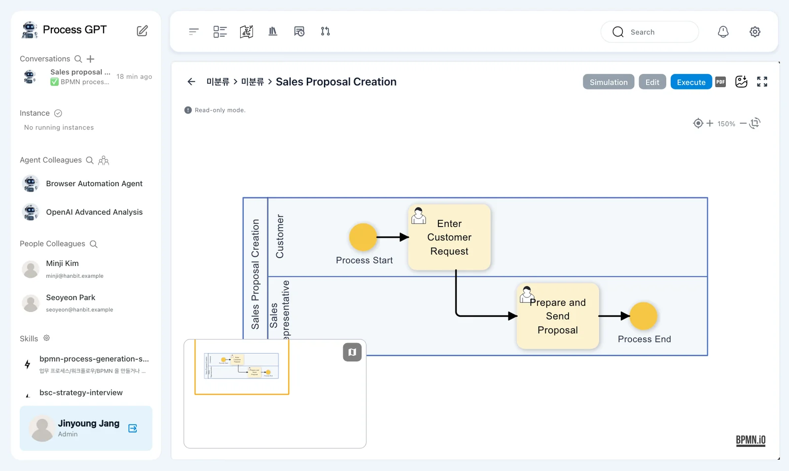
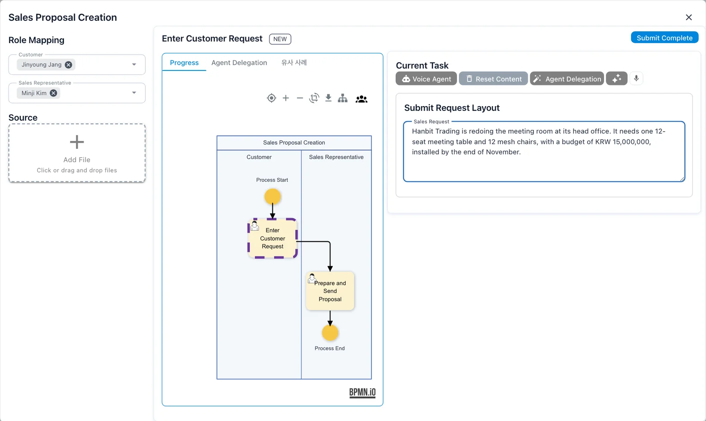
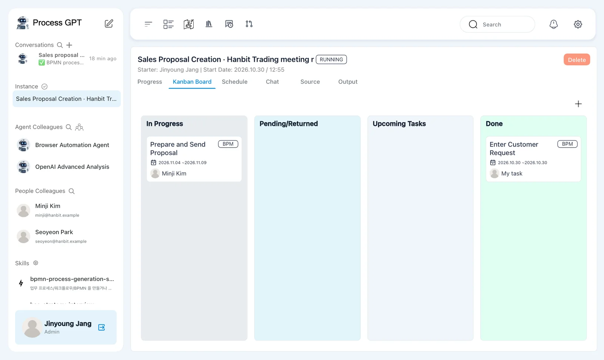
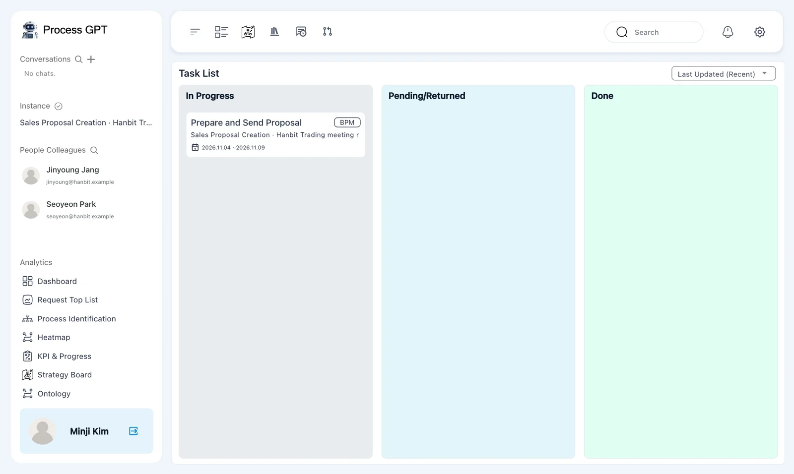
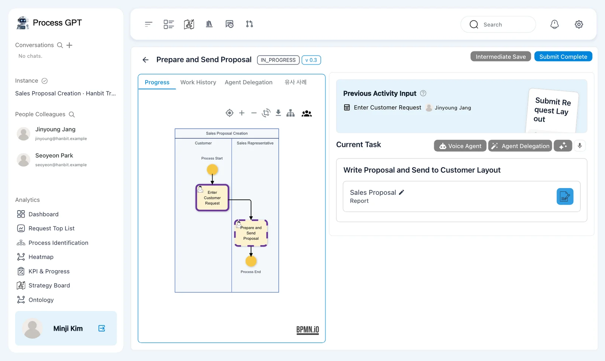
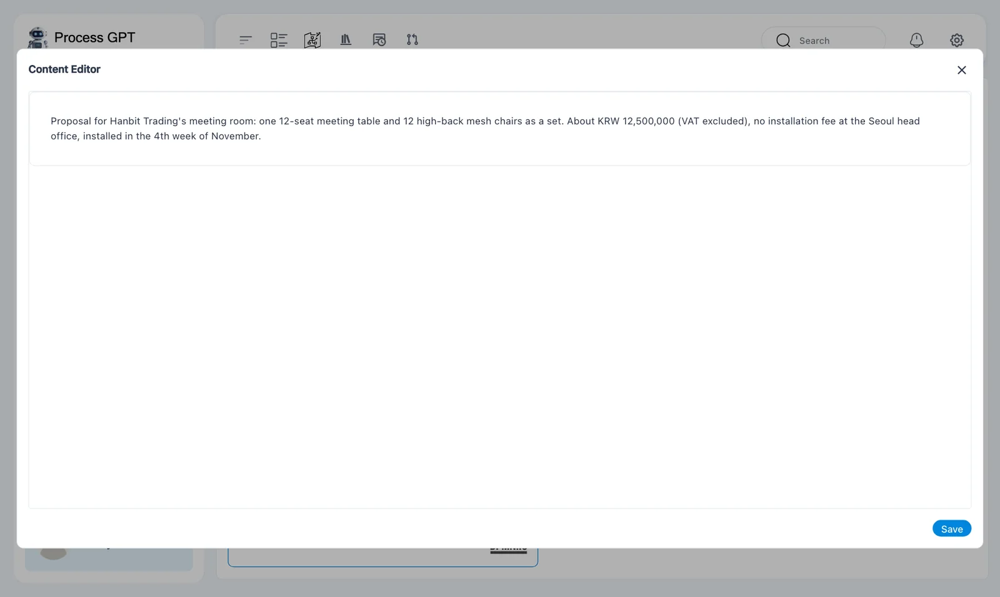
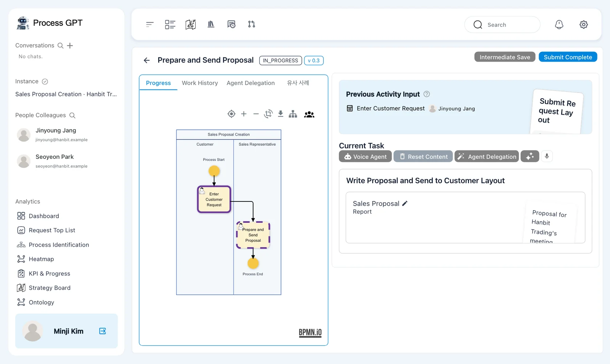
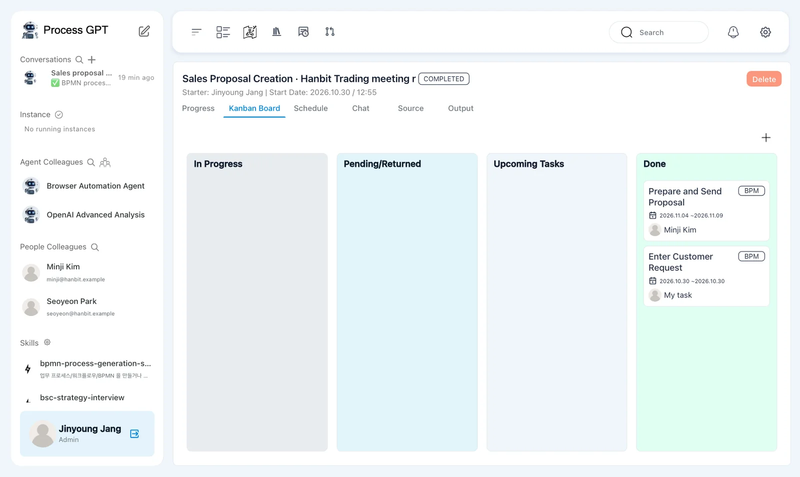

Run 「Sales Proposal Creation」 as Jinyoung Jang, then handle Minji Kim's task. Follow one request from customer input to the completion of the last step.
Your installation needs these fixes
The run screens in this chapter were captured on an installation with the following fixes applied (2026-10-30). Installations from before these fixes reach the installation repository may stop partway through a run. This notice will be removed once the fixes are included.
- Installation: process-gpt-infra-docker #1 — missing columns in the task table; without them, the first submission stops.
- Interface: process-gpt-vue3 #234 — makes execution follow the first step and assigned role owners.
Definitions, instances, and tasks#
In Chapter 5, you assigned Minji to 「Sales Representative」. Now you will run that definition. Jinyoung enters the customer's request, and Minji writes the proposal.
First, separate these three terms.
| Term | Meaning | In this exercise |
|---|---|---|
| Process definition | The plan for doing the work | 「Sales Proposal Creation」 |
| Instance | One run of that plan | Handling Hanbit Trading's meeting-room request |
| Task | One step assigned to its owner | 「Prepare and Send Proposal」 assigned to Minji |
The definition describes the order of work. An instance follows that order for a particular request. Each owner fills in and submits the form in their task.
「Prepare and Send Proposal」 is the second step you renamed in Chapter 4.
Try it 1 — Open the run dialog#
Start in Jinyoung's browser. You will use another browser or private window for Minji later.
- On the Process Definition Map, click 「Sales Proposal Creation」.
- Find the flow diagram and the 「Simulation」, 「Edit」, and 「Execute」 buttons above it.
- Click 「Execute」. A run dialog titled 「Sales Proposal Creation」 opens.
- Under 「Role Mapping」, check that 「Customer」 is Jinyoung Jang and 「Sales Representative」 is Minji Kim.

The first step is 「Enter Customer Request」, shown with 「NEW」. The dialog has 「Progress」, 「Agent Delegation」, and 「유사 사례」 tabs.
On the right, 「Current Task」 contains 「Submit Request Layout」. Jinyoung will fill in its 「Sales Request」 field. Leave 「Add File」 under 「Source」 unused for this exercise.
Text still shown in Korean
The current version shows the definition breadcrumb as 「미분류 › 미분류」 and the similar-cases tab as 「유사 사례」, even in English mode. Use 「Progress」 to view the process flow.
If the owners are different
This exercise uses the definition saved in Chapter 5. If 「Sales Representative」 does not show Minji, check the lane assignment and make sure you saved both the panel and the definition.
Try it 2 — Submit the customer's request#
- Enter the request below in 「Sales Request」.
- Check the owners and the request, then click 「Submit Complete」 at the top right.
- When the instance screen opens, check its title and 「RUNNING」 status.
Use this request:
Hanbit Trading is redoing the meeting room at its head office. It needs one 12-seat meeting table and 12 mesh chairs, with a budget of KRW 15,000,000, installed by the end of November.

Our instance title appears as 「Sales Proposal Creation · Hanbit Trading meeting r…」. The name is generated from the request and may differ in your run. The screen may shorten it.
The instance is still 「RUNNING」 after the first submission. Jinyoung's step is done, but Minji's step remains.
People fill in the forms in this chapter
Leave 「Agent Delegation」 and 「Voice Agent」 unused. You will work with agent-owned steps in Chapter 13.
Try it 3 — Check the running instance#
The instance screen identifies Jinyoung as the starter and shows the start date. Its tabs are 「Progress」, 「Kanban Board」, 「Schedule」, 「Chat」, 「Source」, and 「Output」.
Use the board to see which step is done and which is active.
- Open 「Kanban Board」 in the instance.
- Find 「Enter Customer Request」 under 「Done」. In Jinyoung's view, it shows 「My task」.
- Find 「Prepare and Send Proposal」 under 「In Progress」. Check that its owner is Minji Kim.
- Note the instance name so you can identify the same request in Minji's task list.

「Pending/Returned」 and 「Upcoming Tasks」 are empty at this point. In our capture, Minji's card shows 「2026.11.04 ~2026.11.09」.
This board shows the steps of one instance. Minji's task list is a different view: it shows work assigned to her. Next, find this same task there.
Try it 4 — Open Minji's task#
- Open
http://localhost:8088in another browser or private window and sign in as Minji Kim. - Click the task icon in the top bar to open 「Task List」.
- Under 「In Progress」, find 「Prepare and Send Proposal」. Check its instance name against the Hanbit Trading meeting-room request you just created.
- Click the card to open the task.

The list shows 「Last Updated (Recent)」 at the top. Each task card includes its instance name and scheduled dates.
Check the instance name even when the step name looks right. Opening a run dialog in Chapter 5 may have left an extra 「Enter Customer Request」 task, and other runs can have the same step names.
The task screen shows 「Prepare and Send Proposal」, 「IN_PROGRESS」, and 「v 0.3」. That is the definition version used by this instance.
Its tabs are 「Progress」, 「Work History」, 「Agent Delegation」, and 「유사 사례」. The top-right buttons are 「Intermediate Save」 and 「Submit Complete」. This exercise goes straight to submission after filling in the form.
Try it 5 — Read the request and write the proposal#
Under 「Previous Activity Input」, the 「Enter Customer Request · Jinyoung Jang」 card contains the request submitted in the first step.
Below it, 「Current Task」 shows 「Write Proposal and Send to Customer Layout」. Its title differs from the renamed step title. The form has one field, 「Sales Proposal」, displayed as a 「Report」 card.

- Read Jinyoung's request in 「Previous Activity Input」.
- In 「Current Task」, click the blue edit button on the 「Sales Proposal」 card.
- In 「Content Editor」, enter the proposal below.
- Click 「Save」. Check that the proposal appears in the card's preview.
- Click 「Submit Complete」.
Use this proposal:
Proposal for Hanbit Trading's meeting room: one 12-seat meeting table and 12 high-back mesh chairs as a set. About KRW 12,500,000 (VAT excluded), no installation fee at the Seoul head office, installed in the 4th week of November.


One Report field holds the proposal
This form has no separate request, quote, or schedule fields. Put the proposal, price, installation fee, and timing together in 「Sales Proposal」. Use 「Previous Activity Input」 as your source, then save the editor before submitting the task.
Try it 6 — Check that the whole instance is complete#
- After Minji submits, wait for the instance to show 「COMPLETED」. This took about nine seconds in our run.
- In Jinyoung's window, open the same instance's 「Kanban Board」.
- Check that 「In Progress」 is empty and 「Done」 contains both 「Prepare and Send Proposal」 and 「Enter Customer Request」.

Minji handled the last step, so her submission completed both the task and the instance. In Jinyoung's view, 「Prepare and Send Proposal」 shows Minji Kim, while 「Enter Customer Request」 shows 「My task」.
The first submission left the instance 「RUNNING」. The last submission changed it to 「COMPLETED」. Finishing one task and finishing the whole instance are different events.
The completed step's details
In this run, 「Step Details」 showed 「USER INPUT」 and 「No form content available.」 after completion, followed by feedback controls. Use the instance status and the board to check that the run has finished.
Next chapter#
You submitted a customer request and completed the assigned task. In Chapter 7, the sales team lead will approve or reject a proposal. You will follow both the approval path and the path that returns work for revision.
Check your understanding
- How is a definition different from an instance?
- Where does Minji read the customer's request, and where does she write the proposal?
- Why is the instance 「RUNNING」 after Jinyoung submits but 「COMPLETED」 after Minji submits?
Answers
- A definition is the plan for the work. An instance is one run of that plan for a particular request.
- She reads 「Enter Customer Request · Jinyoung Jang」 under 「Previous Activity Input」. She edits the 「Sales Proposal」 Report card through 「Content Editor」, then saves it.
- Minji's step remains after Jinyoung submits. Minji submits the last step, so the whole instance is complete.